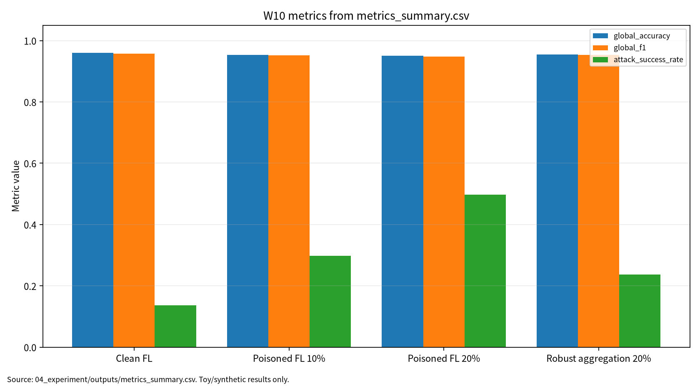

| 항목 | 내용 |
|---|---|
| 주차 | W10 |
| 작성자 | 박영세 |
| 학번 | 26200122 |
| 보고서 제목 | 연합학습(FL) & FL 위협·방어·정책 |
| 작성/보완일 | 2026-06-22, 2026-06-23 |
| 문서 상태 | 제출용 보고서 |
| 실험 근거 | 04_experiment/outputs/run_log.md, metrics_summary.csv, results.json |
| ## 1. 한 문장 요약 |
FL 보안 평가는 raw data 비공유 여부만으로 판단할 수 없으며, local update와 aggregation 단계의 privacy·integrity 위험을 global accuracy, global F1, ASR, Privacy Leakage Proxy, aggregation type, communication bytes, reproducibility evidence로 함께 기록해야 한다[1][2].
본 보고서는 연합학습의 client-server-aggregation 구조와 FedAvg, robust aggregation의 원리를 정리하고, FL에서 발생할 수 있는 gradient leakage, poisoning, backdoor, privacy attack을 위협모형과 평가방법으로 연결한다. 본 실습은 실제 FL framework, 실제 클라이언트 데이터, 실제 privacy attack을 재현하는 것이 아니라 W10의 핵심인 FL 보안 평가축을 안전하게 설명하기 위한 최소 toy protocol이다. 따라서 synthetic federated binary classification 기반 안전 toy 실험과 toy logistic regression을 사용하되, 평가 구조는 global accuracy, global F1, ASR, privacy leakage proxy, mean update norm, communication bytes, reproducibility evidence로 분리하였다.
키워드: Federated Learning, FedAvg, Robust Aggregation, Poisoning, Backdoor, Privacy Leakage
표 1. W10 핵심 개념과 보안 연결
| 개념 | AI 원리 | 보안 연결 |
|---|---|---|
| Federated Learning | client가 local data로 update를 학습하고 server가 global model을 갱신한다 | raw data 비공유만으로 privacy가 자동 보장되지는 않는다 |
| FedAvg | client update를 평균해 global model을 갱신한다 | 악성 update가 평균에 섞이면 model integrity가 흔들릴 수 있다 |
| Secure aggregation | 서버가 개별 update를 보지 못하게 한다 | confidentiality 강화 |
| Robust aggregation | 악성 또는 이상 update의 영향을 줄인다 | integrity 강화 |
연합학습은 client의 local update를 server가 aggregation하여 global model을 갱신하는 분산 학습 구조다[1].
FL은 raw data를 중앙 서버로 보내지 않지만 poisoning, inference attack, privacy leakage와 같은 보안·프라이버시 위험이 남는다[2]. Secure aggregation은 서버가 개별 update를 보지 못하게 해 confidentiality를 강화하고, robust aggregation은 악성 또는 이상 update의 영향을 줄여 integrity를 강화한다. W10은 실제 공격 절차를 다루지 않고 synthetic toy 조건에서 평가표 형식을 검증한다.
표 2. 관련 문헌 5편 요약
| ID | 논문 | 핵심 역할 | DOI/URL 상태 |
|---|---|---|---|
| P01 | Arbaoui et al., Federated Learning Survey | aggregation taxonomy | DOI 10.1145/3678182 확인. 수업자료 CSUR 표기와 공식 TIST 표기 차이 있음 |
| P02 | Mothukuri et al., A survey on security and privacy of federated learning | FL security/privacy survey | DOI 10.1016/j.future.2020.10.007 확인 |
| P03 | Rodriguez-Barroso et al., Survey on federated learning threats | attack-defense taxonomy | DOI 10.1016/j.inffus.2022.09.011, arXiv:2201.08135 확인 |
| P04 | Zhao et al., The Federation Strikes Back | privacy attack와 policy | DOI 10.1145/3724113 확인. Article 번호 확인 필요 |
| P05 | Nguyen et al., Backdoor attacks and defenses in federated learning | backdoor와 ASR 평가 | DOI 10.1016/j.engappai.2023.107166, arXiv:2303.02213 확인 |
FL threat taxonomy는 공격과 방어를 client, server, aggregation, privacy 관점에서 분류한다[3]. FL privacy attack과 policy landscape는 기술적 방어뿐 아니라 적용 도메인과 규제 환경을 함께 고려해야 함을 보여준다[4]. FL backdoor 연구는 clean accuracy가 유지되어도 ASR이 상승할 수 있음을 보여준다[5].
| 논문 | 차별성 | 제출본 활용 |
|---|---|---|
| P01 | FL aggregation taxonomy와 AI 원리 문헌 | FedAvg와 coordinate median 비교 축 |
| P02 | FL security/privacy 위험 전반 | CIA/privacy 위협 분류 |
| P03 | attack-defense taxonomy | malicious client rate와 방어 지표 |
| P04 | privacy attack과 policy landscape | privacy leakage proxy와 정책 함의 |
| P05 | FL backdoor 공격·방어 특화 | ASR와 clean accuracy 동시 평가 |
표 3. W10 Research Track 요약
| 요소 | 내용 |
|---|---|
| 연구문제 | malicious client 비율과 aggregation rule이 clean utility와 ASR에 미치는 영향 |
| 대상 시스템 | FL 기반 분산 학습 시스템 |
| 보호 자산 | client data, local update, global model, aggregation result, training log |
| 평가 지표 | Global Accuracy, Global F1, ASR, Privacy Leakage Proxy, Communication Bytes |
| 제외 범위 | 실제 개인정보, 실제 FL 서비스 침해, 무단 클라이언트 접속, 실제 공격 payload |
표 4. W10 실습 설계
| 항목 | 내용 |
|---|---|
| Dataset | Synthetic federated binary classification |
| Clients | 10 |
| Samples per client | 80 |
| Test samples | 600 |
| Non-IID skew | 0.70 |
| Model | Toy logistic regression |
| Rounds | 25 |
| Local epochs | 3 |
| Aggregation | FedAvg, coordinate median |
| Seed | 42 |
표 5. W10 실습 결과
| 조건 | Malicious Client Rate | Aggregation | Global Accuracy | Global F1 | ASR | Privacy Leakage Proxy | Mean Update Norm | Communication Bytes |
|---|---|---|---|---|---|---|---|---|
| Clean FL | 0% | fedavg | 0.960000 | 0.958042 | 0.136076 | 0.442597 | 0.637927 | 12000 |
| Poisoned FL 10% | 10% | fedavg | 0.953333 | 0.951557 | 0.297468 | 0.428377 | 0.839220 | 12000 |
| Poisoned FL 20% | 20% | fedavg | 0.950000 | 0.948630 | 0.496835 | 0.486591 | 1.024448 | 12000 |
| Robust aggregation 20% | 20% | coordinate_median | 0.955000 | 0.953368 | 0.237342 | 0.439875 | 0.929979 | 12000 |
해석: 20% poisoned FedAvg는 clean accuracy 0.950000을 유지했지만 ASR 0.496835로 상승했다. Coordinate median은 같은 20% 조건에서 ASR을 0.237342로 낮췄다. 이 결과는 실제 FL 제품의 공격 성공률이나 운영 방어 성능 보증이 아니다.
그림 1. 연합학습 보안 평가 흐름
Client Local Data
↓
Local Training / Local Update
↓
Aggregation Server
↓
FedAvg or Coordinate Median
↓
Global Model
↓
Clean Evaluation --> Global Accuracy, Global F1
↓
Triggered Evaluation --> ASR
↓
Update Exposure Check --> Privacy Leakage Proxy
↓
Reproducibility Evidence --> seed, config, outputs, run_log
이 결과는 synthetic federated binary classification 기반 toy 실험의 평가 형식 검증용 수치이며, 실제 FL framework, 실제 secure aggregation, differential privacy, gradient inversion, membership inference, 실제 서비스 보안성으로 일반화하지 않는다. Privacy Leakage Proxy는 실제 gradient inversion 성공률이 아니라 update norm 기반 대용 지표다.
그림 7. W10 metrics summary chart

출처: 04_experiment/outputs/metrics_summary.csv. 이 그래프는 공개 toy/synthetic 산출물 기반이며 실제 공격 성능이나 운영 환경 성능으로 일반화하지 않는다.
AI 도구는 문헌 요약, 코드 점검, 문장 구조화, 그래프 생성 보조에 사용하였다. 모든 DOI/URL, 실험 수치, 본문 인용, 결론은 작성자가 outputs 파일과 로컬 참고문헌 검증표를 대조하여 검증한다.
표. W10 AI 도구 활용 및 검증 기록
| 항목 | 내용 |
|---|---|
| 사용 도구명 | Codex, ChatGPT 계열 도구 |
| 사용 일자 | 2026-06-23 |
| 사용 목적 | 문헌 요약 정리, 보고서 구조화, 안전한 toy/synthetic 실험 결과 표기 점검, 그래프 생성 보조, 제출 전 체크리스트 정리 |
| 주요 프롬프트 요약 | 주차별 제출 보고서 보완, 참고문헌 검증표 정리, metrics_summary.csv 기반 그래프 생성, AI 활용 고지 작성 |
| AI 산출물 반영 위치 | 07_week_submission/w10_submission_report.md, 07_week_submission/assets/w10_metric_chart.png, 05_ai_worklog/ai_disclosure_draft.md |
| 본인 수정 내용 | 주차별 문헌 상태 확인, 실험 수치와 outputs 대조, 안전 범위와 한계 문장 확인, 최종 제출 전 미확정 문헌 분리 |
| 사실관계 검증 방법 | 01_papers/paper_list.md, 01_papers/doi_check.md, 05_references/doi_index.md, 강의계획서 문헌표 대조 |
| 참고문헌 검증 방법 | 제목, 저자, 연도, 학술지/학회, DOI/URL, 본문 인용번호와 참고문헌 목록 대응 확인 |
| 실험결과 검증 방법 | 04_experiment/outputs/metrics_summary.csv, results.json, run_log.md의 수치와 보고서 표기 대조 |
| 최종 책임 확인 | AI 산출물은 초안 보조이며 최종 제출자는 원고 내용, 인용, 실험결과, 연구윤리 책임을 확인한다. |
W10는 기말논문에서 분산 AI 학습의 보안 평가 프레임워크를 설명하는 보조 근거로 활용할 수 있다. 특히 clean accuracy, ASR, privacy leakage, reproducibility를 함께 기록하는 평가표가 W11 DP/MI, W14 MLOps supply chain과 연결된다.
표 6. KCI 논문 제목 후보
| 번호 | 국문 제목 후보 | 영문 제목 후보 | 대상 시스템 | 보안 위협 | 연구방법 | 예상 기여 |
|---|---|---|---|---|---|---|
| 1 | 연합학습 환경에서 악성 클라이언트 비율과 집계 방식이 Backdoor ASR에 미치는 영향 분석 | An Analysis of the Impact of Malicious Client Rate and Aggregation Rule on Backdoor ASR in Federated Learning | FL 시스템 | malicious client, backdoor, poisoned update | 문헌분석 + synthetic FL 실험 | clean accuracy와 ASR 분리 평가 |
| 2 | 연합학습 보안 평가를 위한 Utility·ASR·Privacy Leakage·재현성 통합 프레임워크 연구 | A Unified Evaluation Framework for Utility, ASR, Privacy Leakage, and Reproducibility in Federated Learning Security | FL 기반 분산 학습 | gradient leakage, poisoning, backdoor | toy experiment + 체크리스트 | 다중지표 평가표 |
| 3 | FedAvg와 Coordinate Median 기반 연합학습 Robust Aggregation의 보안성 비교 연구 | A Comparative Study of FedAvg and Coordinate Median Robust Aggregation in Federated Learning Security | FL aggregation | model poisoning, backdoor | synthetic logistic regression | aggregation rule별 ASR 비교 |
추천 제목은 "연합학습 환경에서 악성 클라이언트 비율과 집계 방식이 Backdoor ASR에 미치는 영향 분석"이다. 국내 참고문헌과 학회지 투고 규정은 추가 확인이 필요하다.
A Multi-Metric Evaluation Framework for Backdoor Robustness and Privacy Exposure in Federated Learning Under Malicious Client Participation
Federated learning enables distributed model training without centralizing raw client data, but privacy and integrity risks remain in local updates, aggregation, and global model behavior. This study synthesizes five representative studies and uses a safe synthetic toy experiment to compare clean FedAvg, poisoned FedAvg under 10% and 20% malicious clients, and coordinate-median robust aggregation under 20% malicious clients. The contribution is a multi-metric evaluation structure that separates global accuracy, global F1, ASR, privacy leakage proxy, aggregation rule, communication cost, and reproducibility evidence.
표 7. SCI Related Work 축
| 연구축 | 대표 논문 | 역할 |
|---|---|---|
| FL aggregation taxonomy | Arbaoui et al. | FedAvg, aggregation, personalization, heterogeneity |
| FL security and privacy | Mothukuri et al. | poisoning, inference, privacy risk taxonomy |
| FL threats and defenses | Rodriguez-Barroso et al. | attack-defense mapping and experimental challenges |
| FL privacy and policy | Zhao et al. | privacy attacks, defenses, applications, policy landscape |
| FL backdoor attacks | Nguyen et al. | backdoor ASR, malicious clients, defense challenges |
09_presentation/| 번호 | 참고문헌 | DOI/URL | 상태 |
|---|---|---|---|
| [1] | Arbaoui et al., Federated Learning Survey, ACM TIST 15(6), pp. 1-69, 2024 | https://doi.org/10.1145/3678182 | 확인. 수업자료 CSUR 표기 차이 있음 |
| [2] | Mothukuri et al., A survey on security and privacy of federated learning, FGCS 115, pp. 619-640, 2021 | https://doi.org/10.1016/j.future.2020.10.007 | 확인 |
| [3] | Rodriguez-Barroso et al., Survey on federated learning threats, Information Fusion 90, pp. 148-173, 2023 | https://doi.org/10.1016/j.inffus.2022.09.011; https://arxiv.org/abs/2201.08135 | 확인 |
| [4] | Zhao et al., The Federation Strikes Back, ACM Computing Surveys 57(9), pp. 1-37, 2025 | https://doi.org/10.1145/3724113 | 확인. Article 번호 추가 확인 필요 |
| [5] | Nguyen et al., Backdoor attacks and defenses in federated learning, EAAI 127, Article 107166, 2024 | https://doi.org/10.1016/j.engappai.2023.107166; https://arxiv.org/abs/2303.02213 | 확인 |
| 점검 항목 | 상태 | 비고 |
|---|---|---|
| 1장 한 문장 요약 작성 | 완료 | |
| 2장 학습 배경과 주차 목표 작성 | 완료 | |
| AI 원리 70% 정리 | 완료 | |
| 보안 이슈 30% 정리 | 완료 | |
| 논문 5편 요약 | 완료 | |
| 논문 5편 비교표 보완 | 완료 | P01/P04 추가 확인 메모 포함 |
| Research Track 5요소 작성 | 완료 | 연구문제, 위협모형, 평가방법, 재현성, 오픈문제 |
| P01 DOI/URL 검증 | 완료 / 확인 필요 | TIST 확인, 수업자료 CSUR 표기 차이 확인 필요 |
| P02 DOI/URL 검증 | 완료 | |
| P03 출판 DOI 검증 | 완료 | arXiv와 출판 DOI 확인 |
| P04 DOI/URL 검증 | 완료 / 확인 필요 | Article 번호 추가 확인 필요 |
| P05 출판 DOI 검증 | 완료 | arXiv와 출판 DOI 확인 |
| 실험 outputs 파일 존재 확인 | 완료 | CSV/JSON/run_log |
| 실험 결과와 보고서 수치 일치 | 완료 | outputs 기준 |
| KCI 논문 형식 전환 작성 | 완료 | 초안 |
| SCI 논문 형식 전환 작성 | 완료 | 초안 |
| 본문 인용과 참고문헌 대응 | 완료 | [1]-[5] |
| 표·그림 번호 정리 | 완료 | 표 1-7, 그림 1 |
| AI 활용 고지 작성 | 완료 | |
| PDF 저작권 위험 점검 | 완료 / 확인 필요 | PDF tracked 상태 |
| Docker/pyproject/config/code 정합성 점검 | 완료 | pyproject 의존성 pyyaml로 최소화. 로컬 실행, Docker build, docker compose run 확인 |
| 최종 사람이 검토할 항목 표시 | 완료 | 제출 확정 아님 |